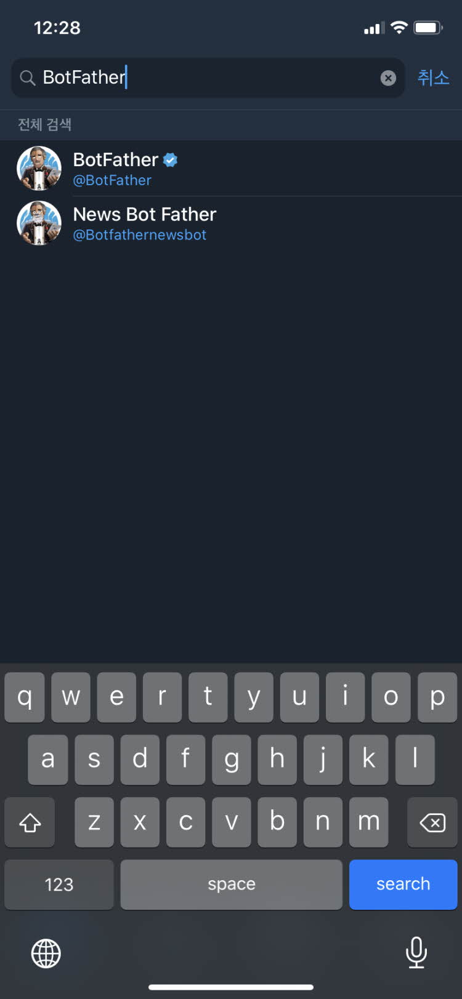
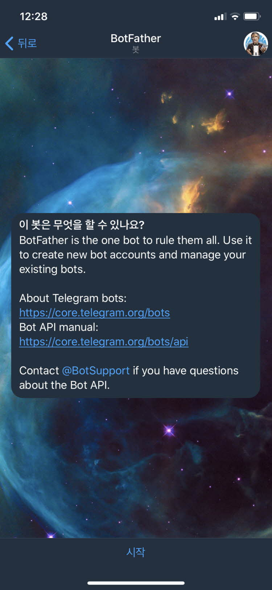
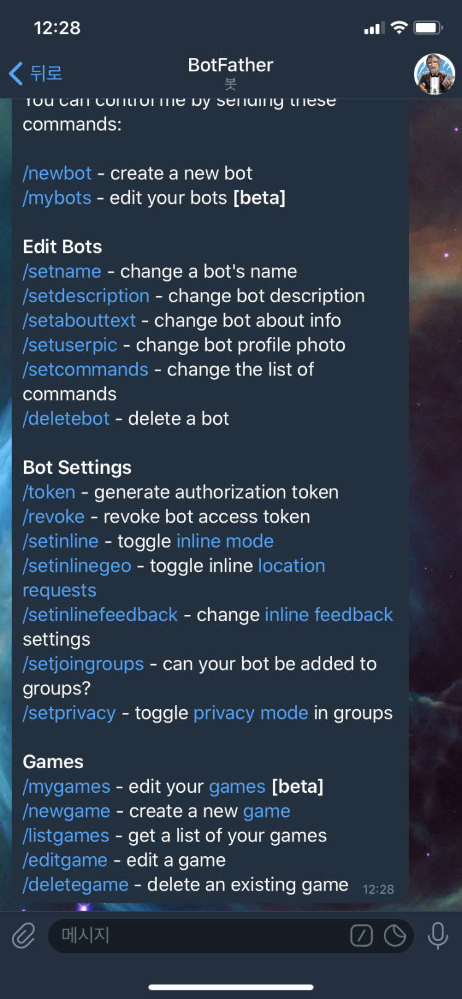
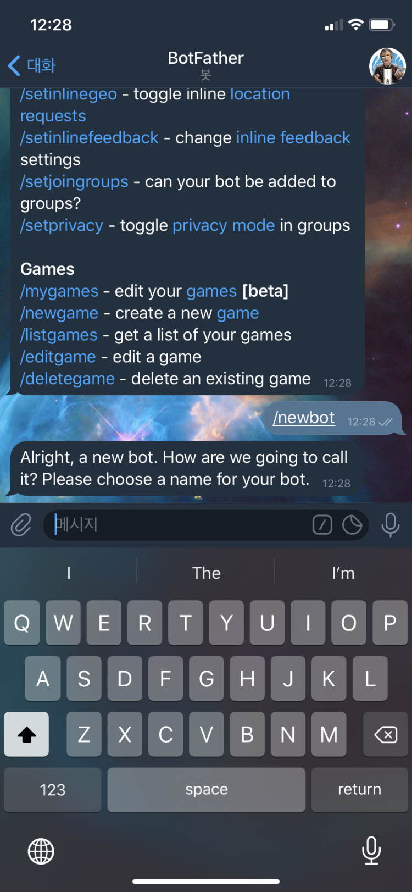
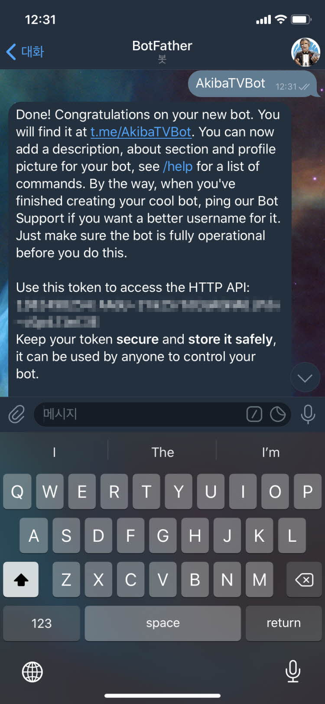
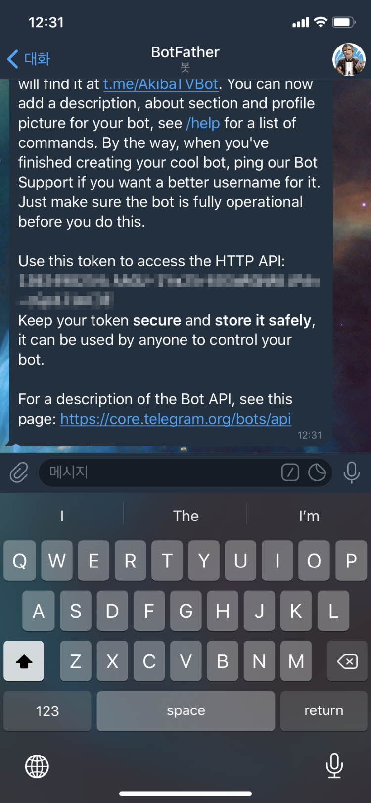
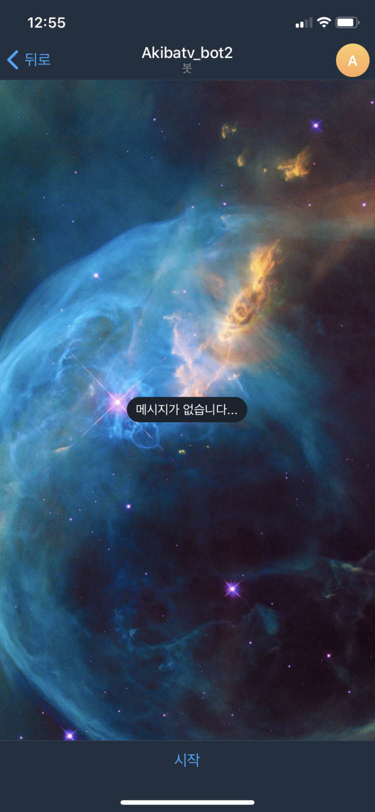
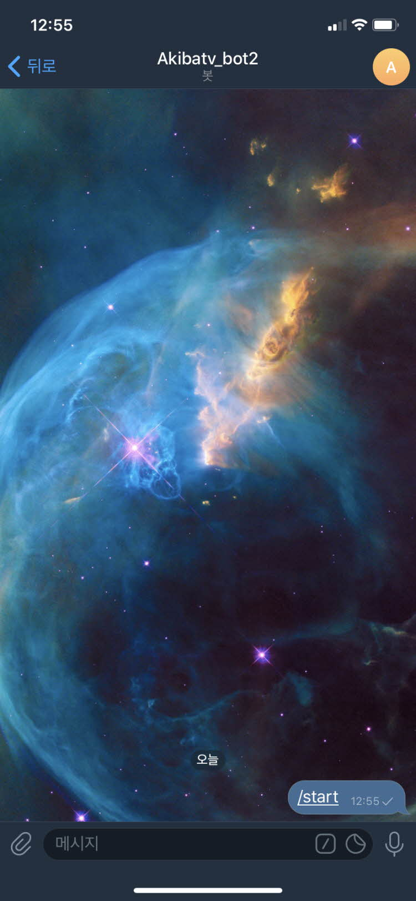
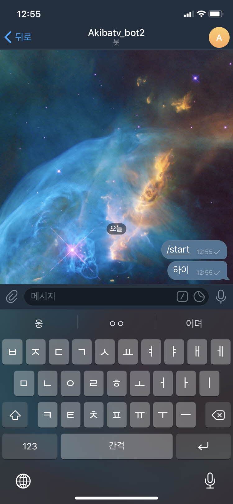
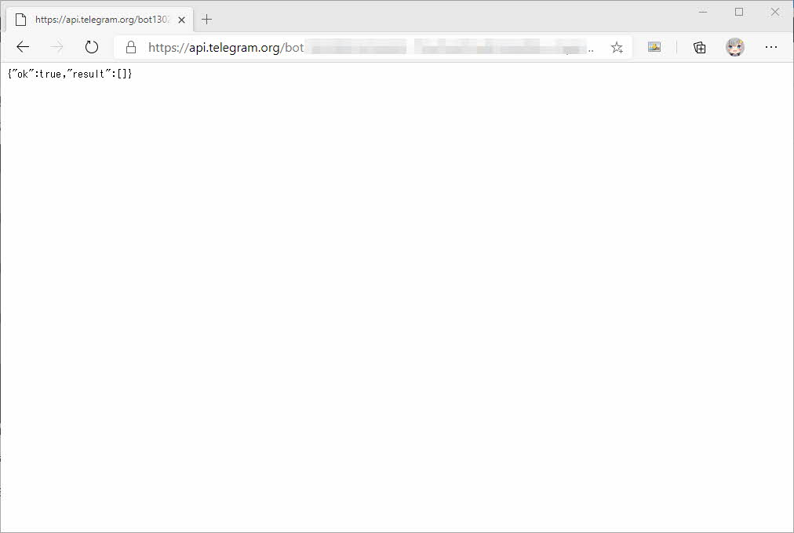

텔레그램 봇파더를 이용한 챗봇 만들어 보기
텔레그램 봇파더를 이용한 챗봇 만들어 보기
안녕하세요. AkibaTV입니다.
이번에 소개할 내용은 텔레그램 봇파더를 이용한 챗봇 만들어 보기 입니다.
라인이나 카카오톡과 같이 복잡한 절차를 거쳐서 챗봇을 만드는게 아닌
핸드폰으로 간단하게 챗봇을 생성후 API를 조금만 다루시면 손쉽게 챗봇을 만드실수가 있습니다.
어떻게 챗봇을 만드는지 알아보도록 하겠습니다.
핸드폰 또는 PC에서 텔레그램 어플리케이션을 다운로드 받으신후 실행해 주세요.

친구 검색에 BotFather를 입력해 주신후 첫번째 봇파더를 선택해 주세요.

봇파더를 선택하신후 위와같이 나오시면 [시작] 버튼을 눌러주세요.

시작을 누르시면 위와같이 무엇을 할것인지에 대한 목록이 나오게 됩니다.

그럼 /newbot을 입력해 주시기 바랍니다.
그러면 사용할 챗봇명을 입력하라고 나오게 됩니다.
원하시는 챗봇명을 입력해 주시면 됩니다만 마지막에 bot을 반듯이 입력을 해주셔야만 합니다.


저는 AkibaTVBot이라고 입력을 했습니다.
원하는 챗봇명을 입력후 챗봇이 생성이 되면 토큰값이 발급이 됩니다.
t.me/AkibaTVBot을 클릭하시면 채팅방에 참가를 하게 됩니다.

채팅방에 접속후 시작을 눌러주시기 바랍니다.

챗봇과 대화를 할수있는 상태가 되었습니다.

그럼 적당히 챗봇에 명령을 해보지만 반응은 없습니다.
아래의 명령어를 웹브라우저에 입력을 해주시기 바랍니다.
1 | # 챗봇 생성 확인 |

위와같이 나오면 정상적으로 챗봇이 등록된것입니다.
다음에는 챗봇을 이용해 메세지 전송을 해보도록 하겠습니다.